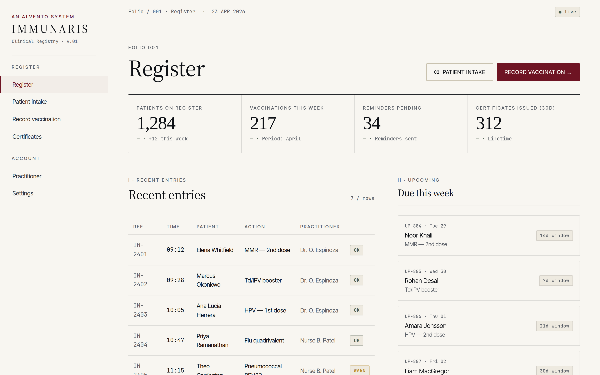
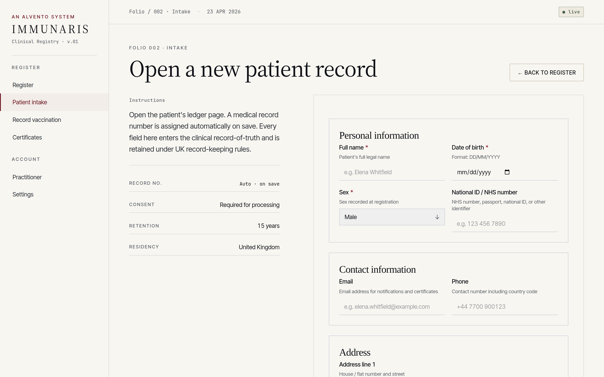
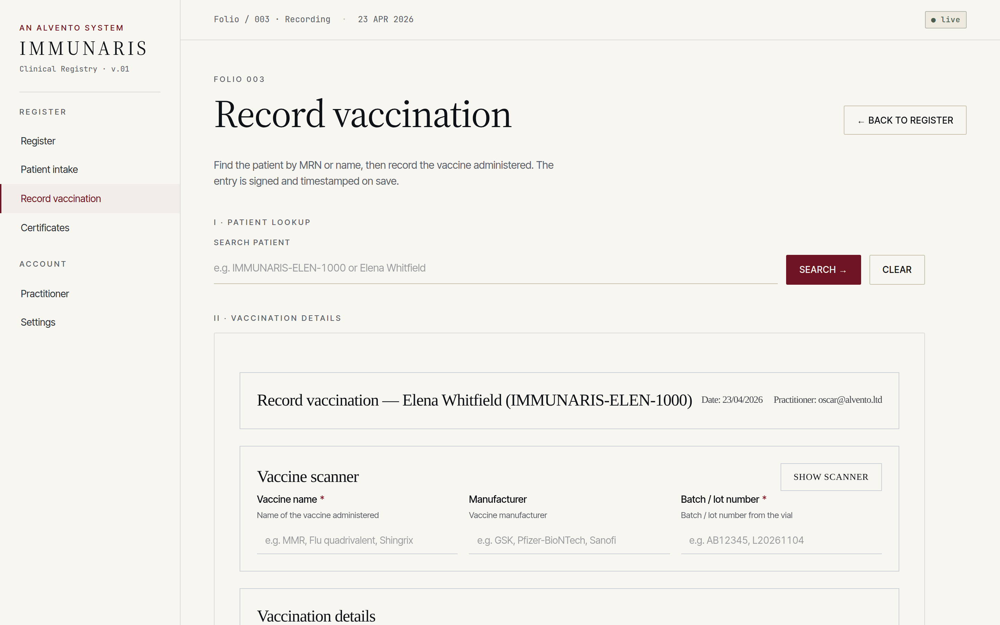
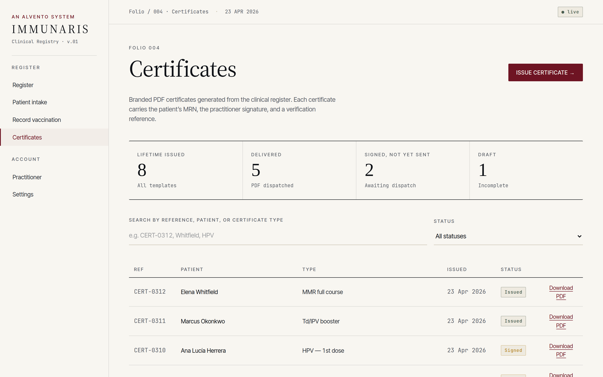

A clearer record. From first dose to final certificate.
Who needs their next dose? What was administered? Where’s the certificate? Immunaris brings patient registration, vaccination recording and handover into one focused workflow. Explore the screens and follow the record from intake to certificate.
Four steps. One connected workflow.
See how a patient moves from registration to a vaccination record and a certificate. Each screen focuses on the task at hand. The reference build uses sample data.
Find the patient. See what’s due.
A register brings patients and their vaccination status into view. Explore the cohort and due-date information your team would need to plan the next step.

Get the right details from the start.
The intake screen brings identity, allergies, vaccination history and consent details into one structured form, so the team has a clear starting point.

Record the dose while the details are fresh.
Product, batch, administration site, clinician and time belong together. The recording screen shows how to capture those details as part of the same workflow.

Turn the record into a useful handover.
Explore the certificate view and how a recorded vaccination can become a document to share. We can adapt the output to the information your service needs to hand over.

Open the register. Follow a patient through.
Explore the register, intake and certificate screens in the interactive demo. It uses sample patient data and demo sign-in; no real patient records are included.
Or open in a new tab -> immunaris-case-study.vercel.app
Your service has its own workflow. Let’s build for it.
Immunaris shows one vaccination workflow. The same approach to structured intake, clear records and useful handovers can inform a system for your service. We start with the tasks your team performs and the decisions the record needs to support.
Bring the appointment into focus.
We can shape registration, dose recording and certificate output around your clinic’s services and the information your team needs at each step.
Make the handover useful.
We can adapt the workflow around staff cohorts, review dates and the reports your service needs, with access and sharing rules agreed during scoping.
Structure the information you depend on.
We can design intake, review and reporting around your own dataset and users. The vaccination example provides a starting point for that conversation.
Connect the workflow carefully.
We agree required fields, user roles, correction history, retention and integrations with your team before a live implementation.
Less hunting for a field. More clarity at each step.
The register, intake form and certificate use a consistent layout: readable type, clearly grouped fields and a focused view of the task. The aim is to make the next action easy to find and the resulting record easy to read.
For a live service, we work through the clinical and information-governance requirements with your team and test the agreed controls. This reference demo is a way to explore the workflow and design.
A foundation your team can build on.
The interface uses React and TypeScript, with structured forms and reusable components. The implementation stack includes Supabase and Postgres; live authentication, permissions, record history and integrations are part of the deployment scope.
Your clinical workflow deserves the same care as your records.
Tell us where information gets entered, where it gets checked and who needs it next. Let’s design a clearer path through the work.